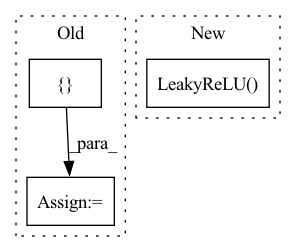

Pattern ID :36705

Before Change
out_channels = 64
for _ in range(num_conv_block):
block += [nn.ReflectionPad2d(1),
nn.Conv2d(in_channels, out_channels, 3),
nn.LeakyReLU(),
nn.BatchNorm2d(out_channels)]
in_channels = out_channels
block += [nn.ReflectionPad2d(1),
After Change
self.features = nn.Sequential(
// Conv0
nn.Conv2d(3, 64, kernel_size=3, stride=1, padding=1, bias=False),
nn.LeakyReLU(negative_slope=0.2, inplace=True),
nn.Conv2d(64, 64, kernel_size=4, stride=2, padding=1, bias=False),
nn.BatchNorm2d(64),
nn.LeakyReLU(negative_slope=0.2, inplace=True),
In pattern: SUPERPATTERN
Frequency: 3
Non-data size: 3
Instances
Fragment ID: 104766526
Project Name: lornatang/esrgan-pytorch
Commit Name: 8ef58f0f8458d618a99fffa07433927c9b9ef70f
Time: 2020-10-12
Author: liuchangyu1111@gmail.com
File Name: esrgan_pytorch/model.py
M Class Name: Discriminator
N Class Name: Discriminator
M Method Name: __init__(1)
N Method Name: __init__(2)
M Parent Class: nn.Module
N Parent Class: nn.Module
M File Name: esrgan_pytorch/model.py
N File Name: esrgan_pytorch/model.py
M Start Line: 140
M End Line: 177
N Start Line: 26
N End Line: 74
'>
Before Change
layers = []
for resl in list(resl2ch.keys())[::-1]:
layers += [
ResBlock(resl2ch[resl], resl2ch[resl//2])
]
if resl == list(resl2ch.keys())[1]:
break
After Change
ochannels = channels
self.from_rgb = nn.Sequential(
Conv2d("elr", image_channels, ochannels, 1),
nn.LeakyReLU(0.2, inplace=True)
)
resl = image_size
blocks = []
while resl > 4:
'>
Fragment ID: 104766474
Project Name: stomoya/animeface
Commit Name: b3652bae109c713da926d5532eb014b02135da52
Time: 2020-12-14
Author: blackie0110@gmail.com
File Name: implementations/StyleGAN2/model.py
M Class Name: Discriminator
N Class Name: Discriminator
M Method Name: __init__(7)
N Method Name: __init__(1)
M Parent Class: nn.Module
N Parent Class: nn.Module
M File Name: implementations/StyleGAN2/model.py
N File Name: implementations/StyleGAN2/model.py
M Start Line: 354
M End Line: 387
N Start Line: 364
N End Line: 389
'>
Before Change
)
// Upscale block
upsampling = []
for _ in range(2):
upsampling.append(UpsampleBlock(64))
self.upsampling = nn.Sequential(*upsampling)
After Change
// Upsampling convolutional layer.
self.upsampling = nn.Sequential(
nn.Conv2d(64, 64, (3, 3), (1, 1), (1, 1)),
nn.LeakyReLU(0.2, True)
)
// Reconnect a layer of convolution block after upsampling.
self.conv3 = nn.Sequential(
'>
Fragment ID: 104766533
Project Name: lornatang/esrgan-pytorch
Commit Name: 46b948d8f86c7b83fe328e4572704b1755f98e68
Time: 2022-04-18
Author: liuchangyu1111@gmail.com
File Name: model.py
M Class Name: Generator
N Class Name: Generator
M Method Name: __init__(1)
N Method Name: __init__(1)
M Parent Class: nn.Module
N Parent Class: nn.Module
M File Name: model.py
N File Name: model.py
M Start Line: 120
M End Line: 147
N Start Line: 147
N End Line: 171